14 Proxmox Standalone Server¶
14.1 Doelstellingen¶
Na dit hoofdstuk beheerst de student het volgende:
-
uitleggen wat een standalone Proxmox-server is en wanneer je beter voor een cluster kiest;
-
het systeem bijwerken en uitleggen waarom de tijd daarbij correct moet staan;
-
de netwerkconfiguratie van Proxmox lezen: de fysieke netwerkkaart, de Linux bridge vmbr0 en de plaats van het IP-adres;
-
uitleggen waarom een virtuele machine zich gedraagt alsof ze rechtstreeks aan het fysieke netwerk hangt, en waarom een hostingprovider dat vaak blokkeert;
-
beschrijven wat masquerading (NAT) doet en wanneer je het nodig hebt;
-
uitleggen waarom alle nodes van een cluster dezelfde tijd nodig hebben, en nagaan welke NTP-servers chrony gebruikt;
-
de onderdelen van het nodebeheer benoemen: samenvatting, netwerk, opslag, firewall, updates, certificaten, tijd en takenlogboek;
-
de onderdelen van het datacenterbeheer benoemen: cluster, opslag, back-up, replicatie, toegangsbeheer, high availability, SDN en firewall;
-
onder Datacenter en Permissions tweefactorauthenticatie met TOTP instellen en weer uitschakelen, en de rol van herstelsleutels uitleggen;
-
het verschil uitleggen tussen LVM en LVM-thin;
-
met enkele CLI-opdrachten de server controleren en de virtuele machines oplijsten;
14.2 Inleiding¶
Een Proxmox standalone server is een Proxmox server die geen deel uitmaakt van een cluster.
Dit betekent dat de server zelfstandig werkt en niet gekoppeld is aan andere Proxmox-nodes. Standalone servers zijn ideaal voor kleinere omgevingen of situaties waarin clustering of high availability (HA) niet vereist is. Je bereikt hem via de webinterface op poort 8006 of via SSH.
14.3 Belangrijke instellingen¶
14.3.1 Systeem software-updates¶
Om foutloos te kunnen updaten moet je klok juist staan. Staat de tijd niet juist, dan aanvaardt de server de handtekeningen van de repository's niet en mislukt de update.
root@pve:~# systemctl restart chronyd
root@pve:~# apt-get update && apt-get dist-upgrade
Let op het verschil tussen de twee upgradecommando's:
-
apt-get upgrade werkt enkel pakketten bij waarvoor niets extra geïnstalleerd of verwijderd moet worden. Brengt een nieuwe versie een extra afhankelijkheid mee, dan slaat apt dat pakket over en meldt hij The following packages have been kept back;
-
apt-get dist-upgrade lost die afhankelijkheden wel op en mag daarvoor pakketten bijplaatsen of weghalen.
Bij Proxmox gebruik je altijd dist-upgrade. Een nieuwe kernel komt namelijk binnen als een nieuw pakket, bijvoorbeeld proxmox-kernel-6.17, en met upgrade zou je die nooit krijgen. In recentere versies van apt heet hetzelfde commando apt full-upgrade.
De naam dist-upgrade betekent hier niet dat je naar een nieuwe Debian-versie overstapt. Zolang daar bij Suites (zie 13.7.2) trixie vermeld staat, blijf je op Debian 13 en dus op Proxmox VE 9.
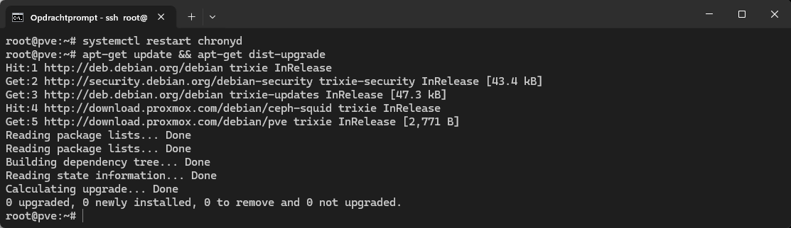
Je kan hetzelfde resultaat via de GUI bekomen.
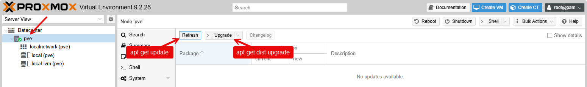
14.3.2 Netwerkconfiguratie¶
14.3.2.1 Inleiding¶
Je kan het netwerk op twee manieren instellen: via de webinterface, of door het bestand /etc/network/interfaces met de hand te bewerken. Wij doen het via de webinterface. Die beschermt je tegen fouten, en een typfout in dat bestand kan de server onbereikbaar maken.
Een Linux bridge-interface (vaak vmbrX genoemd) is nodig om gasten te verbinden met het onderliggende fysieke netwerk. Het kan worden gezien als een virtuele switch waarmee de gasten en fysieke interfaces zijn verbonden. Deze sectie biedt enkele voorbeelden van hoe het netwerk kan worden ingesteld.
14.3.2.2 Standaardconfiguratie met behulp van een brug¶
Bridges zijn als fysieke netwerkswitches die in software zijn geïmplementeerd. Net zoals je op één fysieke switch meerdere toestellen aansluit, kan je er meerdere VM’s en containers aan koppelen.
Het installatieprogramma maakt één bridge met de naam vmbr0 en koppelt die aan de eerste fysieke netwerkkaart van de server. In onze opstelling is dat nic0.
root@pve:~# ip a
…
2: nic0: <BROADCAST,MULTICAST,UP,LOWER_UP> mtu 1500 qdisc fq_codel master vmbr0 state UP group default qlen 1000
link/ether 00:0c:29:88:ff:3a brd ff:ff:ff:ff:ff:ff
altname enp2s1
altname enx000c2988ff3a
3: vmbr0: <BROADCAST,MULTICAST,UP,LOWER_UP> mtu 1500 qdisc noqueue state UP group default qlen 1000
link/ether 00:0c:29:88:ff:3a brd ff:ff:ff:ff:ff:ff
inet 192.168.112.144/24 scope global vmbr0
valid_lft forever preferred_lft forever
inet6 fe80::20c:29ff:fe88:ff3a/64 scope link proto kernel_ll
valid_lft forever preferred_lft forever
Vier dingen zijn hier van belang:
-
Bij nic0 staat master vmbr0. De fysieke kaart is dus een poort op de bridge geworden en werkt niet langer zelfstandig.
-
Onder nic0 staat geen inet-regel: de kaart heeft geen IP-adres.
-
Dat adres staat bij vmbr0: 192.168.112.144/24. Dat is het adres waarmee je de webinterface bereikt.
-
Allebei hebben ze hetzelfde MAC-adres, 00:0c:29:88:ff:3a. De bridge neemt dat over van haar poort, zodat het netwerk geen verschil merkt.
Straks hang je daar virtuele machines en containers aan. Elke gast krijgt dan zijn eigen poort op die bridge, met een eigen MAC-adres en een eigen IP-adres in hetzelfde netwerk als de server. Voor de buitenwereld lijkt elke gast daardoor een apart toestel, ook al loopt al dat verkeer over één netwerkkaart.
Onderstaande figuur vat samen hoe dat op onze server in elkaar zit.
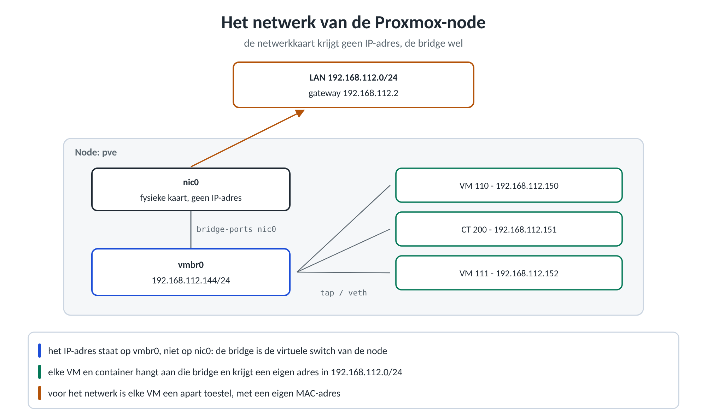
In ons geval krijgen de VM’s IP-nummers in het subnet 192.168.112.0/24.
In de webinsterface klik je links op de node pve, dan op System en daarna op Network.
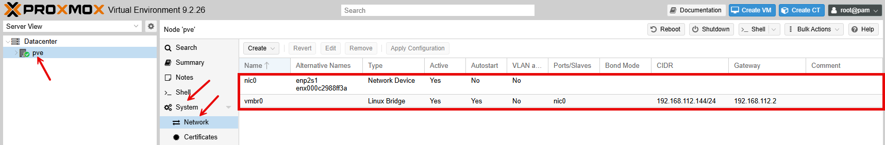
Klik je op de netwerkkaart nic0, dan zie je dat die geen IP-adres heeft.
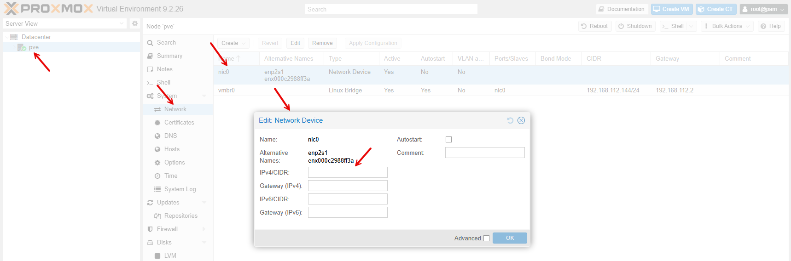
Zoals je verwacht staat daar geen IP-adres (nic0) en is het IP-adres gekoppeld aan de bridge.
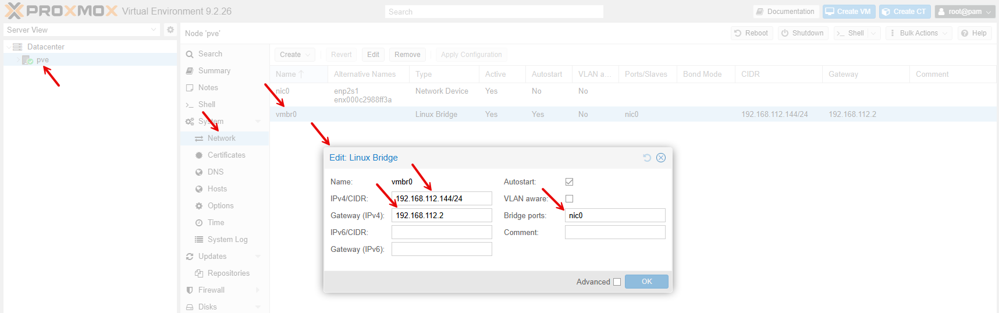
Je ziet ook de gateway en dat er een brug wordt gemaakt naar de netwerkkaart (nic0). De gateway kan je uiteraard ook opvragen via de CLI.
root@pve:~# ip route
default via 192.168.112.2 dev vmbr0 proto kernel onlink
192.168.112.0/24 dev vmbr0 proto kernel scope link src 192.168.112.144
Wat je in de webinterface instelt, komt terecht in één tekstbestand op de server. Daar staat de echte configuratie; de webinterface schrijft er enkel in. Je kan dus altijd nakijken wat er precies veranderd is:
root@pve:~# nano /etc/network/interfaces
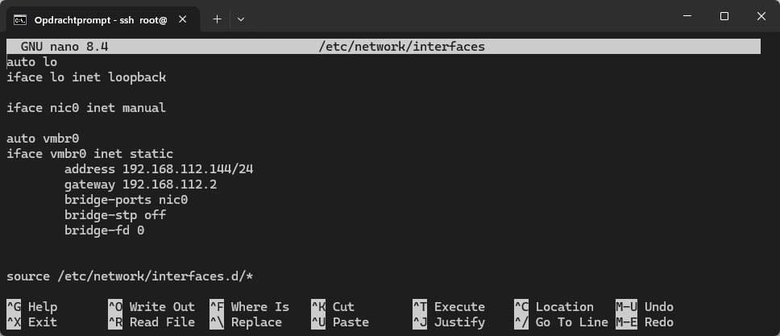
Pas dit bestand liever niet met de hand aan: een typfout merk je vaak pas bij de volgende herstart, en dan is je server onbereikbaar. Moet het toch, voer dan erna onmiddellijk ifreload -a uit. De wijziging wordt zo actief zonder herstart, en je merkt meteen of de instellingen kloppen.
14.3.2.3 Masquerading (NAT)¶
De opstelling hierboven werkt omdat het netwerk meerdere MAC-adressen op één kabel aanvaardt. Elke VM heeft namelijk een eigen MAC-adres, en al dat verkeer loopt over dezelfde netwerkkaart van de server. In VMware en op een thuisnetwerk is dat geen probleem.
Bij een hostingprovider en bij de PXL ligt dat anders. Die ziet op jouw poort plots een tweede en een derde MAC-adres opduiken. Die houdt dat voor een aanval of een fout aangesloten kabel en legt de poort stil. Daarom laten de meeste providers maar één MAC-adres per poort toe.
De uitweg heet masquerading. Dat is een vorm van NAT. Je zet je VM’s dan in een eigen intern netwerk op een tweede bridge die aan geen enkele netwerkkaart hangt. De Proxmox-host vertaalt hun verkeer naar zijn eigen IP-adres en stuurt de antwoorden naar de juiste VM terug. Naar buiten toe blijft er zo één IP-adres en één MAC-adres over: dat van de server.
Daar staat wel iets tegenover. De VM’s zijn van buitenaf niet langer rechtstreeks bereikbaar want ze hebben geen eigen adres op het netwerk meer. Als je dan toch een webserver in een VM publiceren maak je gebruik van port forwarding. Het is hetzelfde idee als -p 8080:80 bij Podman: één poort van de host wordt doorgegeven aan iets (een VM of container) die erachter zit.
Wij hebben op dit moment masquerading niet nodig. VMware aanvaardt meerdere MAC-adressen op één poort. We houden dus de standaardconfiguratie met vmbr0.
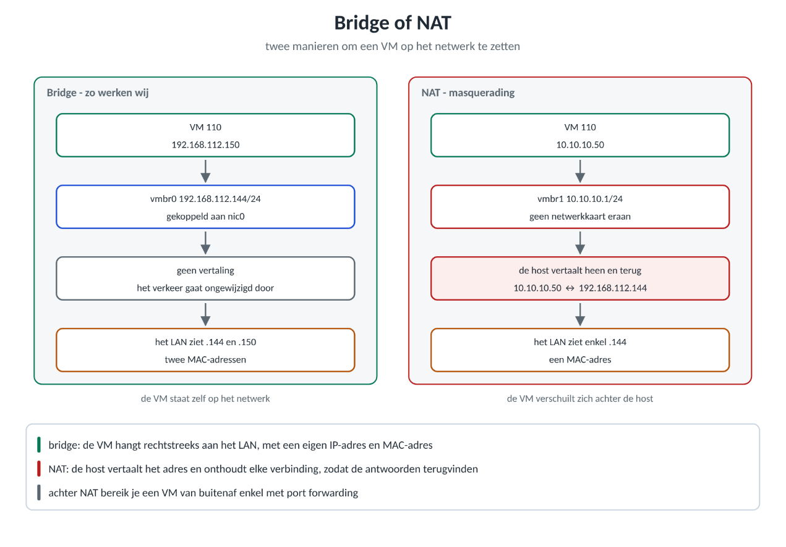
We stellen dit later in.
14.3.3 Tijdsynchronisatie¶
De klok van deze server heb je al correct gezet: je controleerde ze met timedatectl, herstartte de tijddienst met systemctl restart chronyd en dwong zo nodig een sprong af met chronyc makestep. Daarbij ging het om deze ene server. Hier kijken we naar de bron: waar haalt chrony zijn tijd vandaan?
Die tijd moet kloppen, zeker zodra je met een cluster werkt. De nodes melden elkaar voortdurend dat ze nog meedoen, en Ceph doet hetzelfde voor de opslag. Lopen hun klokken uit elkaar, dan vertrouwen ze die berichten niet meer. En apt weigert je pakketlijsten zodra de tijd te ver afwijkt.
Proxmox gebruikt sinds versie 7 chrony als NTP-daemon. Welke tijdservers chrony aanspreekt, staat in één bestand:
root@pve:~# cat /etc/chrony/chrony.conf
…
# Use Debian vendor zone.
pool 2.debian.pool.ntp.org iburst
…
Standaard staat daar een pool: een naam die naar een wisselende groep tijdservers verwijst. Chrony kiest er zelf een paar uit en schakelt over wanneer er één wegvalt. Met iburst stuurt hij bij het opstarten meteen een reeks aanvragen, zodat de klok binnen enkele seconden gelijk staat in plaats van na een kwartier.
Je kan ook zelf servers opgeven, bijvoorbeeld een tijdserver van je eigen netwerk:
server ntp1.example.com iburst
server ntp2.example.com iburst
server ntp3.example.com iburst
Wij laten de standaardinstelling staan.
Met chronyc tracking zie je met welke server chrony praat en hoe groot het verschil is:
root@pve:~# chronyc tracking
…
System time : 37687.238281250 seconds slow of NTP time
…
System time geeft het verschil aan tussen de klok van je server en de echte tijd: 37687 seconden, ofwel 10 uur en 28 minuten achter. Typisch voor een VM die uit een snapshot of uit pauze komt.
We zetten dat recht.
root@pve:~# systemctl restart chronyd
root@pve:~# chronyc tracking
…
System time : 0.000162361 seconds slow of NTP time
…
Opgelost. 0,000162 seconden is 0,16 milliseconde.
14.4 Overzicht nodebeheer¶
Klik je links op de node pve, dan opent het beheer van die ene server. Alles wat deze machine aanbelangt staat in dat menu. We lopen de onderdelen een voor een af.
14.4.1 De knoppen bovenaan¶
Bovenaan het venster staan twee rijen knoppen. De bovenste hoort bij de hele interface, de onderste bij de node die je links geselecteerd hebt.
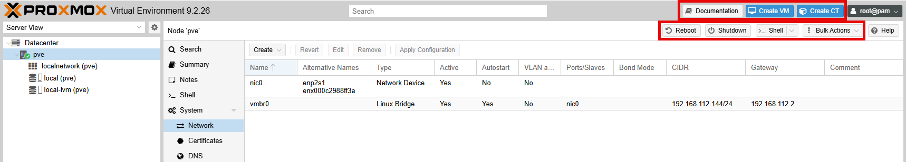
In de bovenste rij staat Documentation: die opent de volledige Proxmox-handleiding. Ze staat lokaal op de server geïnstalleerd. Je kan ze dus ook raadplegen op een machine zonder internetverbinding. Ernaast staan Create VM en Create CT, waarmee je een virtuele machine of een container aanmaakt.
De rij eronder geldt voor de node zelf, hier pve. Met Reboot en Shutdown herstart of stop je de server. Shell opent een terminal in de browser. Met Bulk Actions start, stop of migreer je in één keer alle virtuele machines van deze node.
14.4.2 Summary¶
Onder Summary volg je de node in realtime: het verbruik van processor, geheugen en opslag, en hoe lang de server al draait.
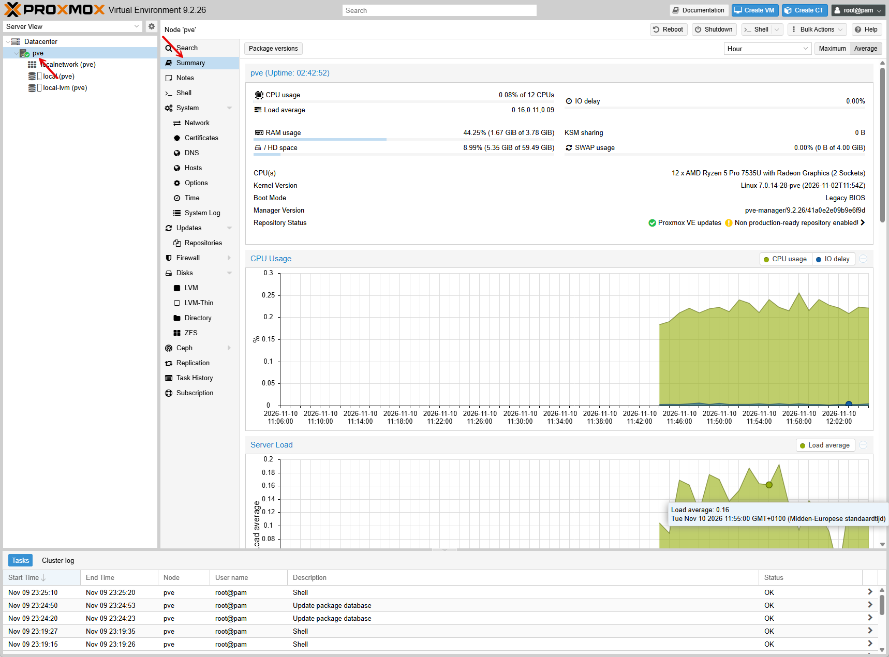
14.4.3 Network¶
Onder Network staan de fysieke netwerkkaarten, zoals nic0, en de virtuele bridges, zoals vmbr0. Je hebt ze hierboven al bekeken.
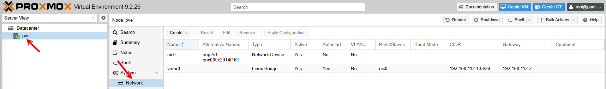
Virtuele machines koppel je aan zo'n bridge om op het netwerk te raken. Onthoud daarbij de vuistregel: het IP-adres hoort op de bridge, niet op de fysieke kaart. Extra bridges maak je hier aan. Daar komen we later op terug.
14.4.4 Disks¶
Onder Disks zie je de fysieke schijven van de server, weergegeven als /dev/sdX. Je kan er een schijf toevoegen, partitioneren of opnemen in een Logical Volume Manager (LVM).
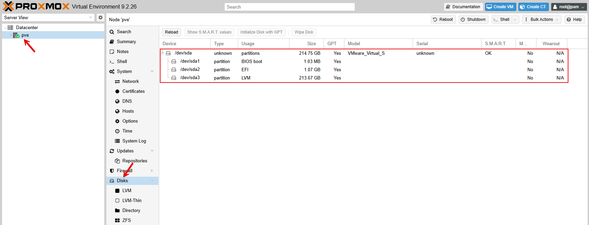
-
Onder Disks zie je het volgende:
LVM: klassieke logische volumes, goede prestaties, maar geen snapshots en geen flexibele ruimteverdeling. -
LVM-Thin: LVM met thin provisioning en snapshots; standaard en meest gebruikte keuze voor VM's in Proxmox.
-
Directory: gewone map op een bestandssysteem (ext4/xfs); ideaal voor ISO's, back-ups en templates.
-
ZFS: geavanceerd bestandssysteem met snapshots, compressie en databescherming; vraagt meer RAM maar biedt de meeste functies.
Proxmox ondersteunt daarnaast Ceph, een gedistribueerd opslagsysteem dat gegevens over meerdere nodes verspreidt en repliceert.
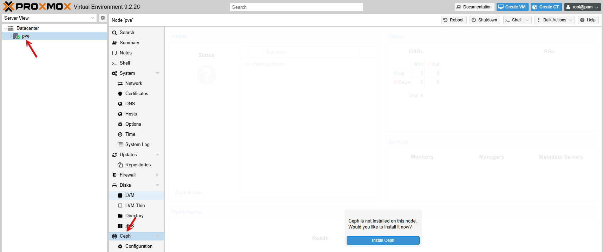
14.4.5 Firewall¶
Onder Firewall staan de regels die bepalen welk netwerkverkeer deze node binnen en buiten mag.
We stellen hier nu niets in.
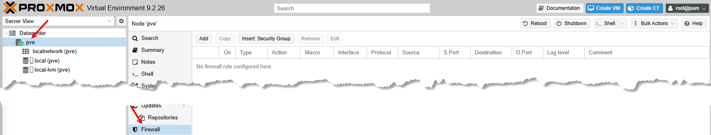
14.4.6 Updates¶
Onder Updates beheert Proxmox de pakketten met apt zoals reeds besproken.
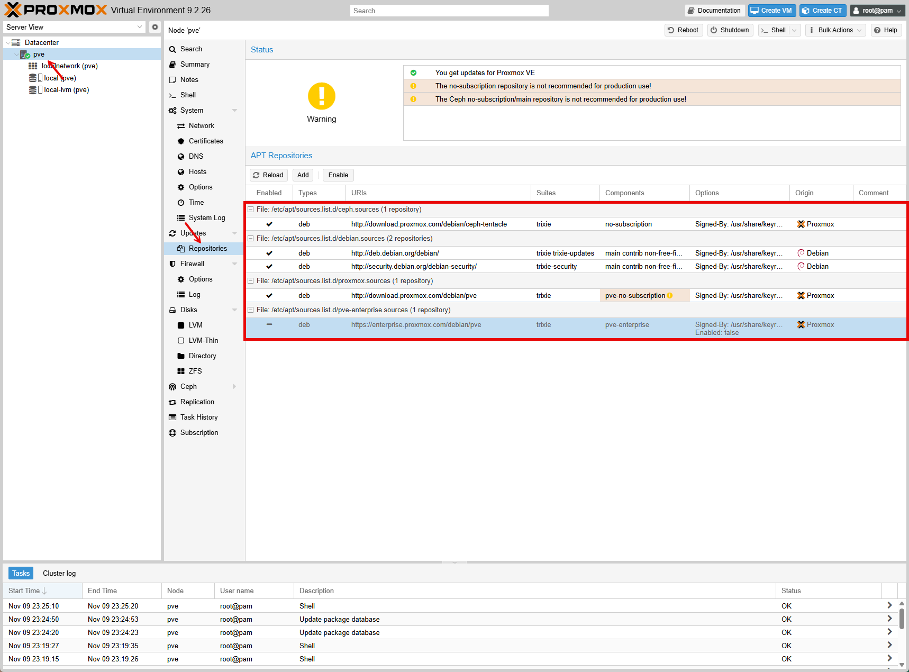
Je controleert hier of er updates klaarstaan en je installeert ze met een klik.
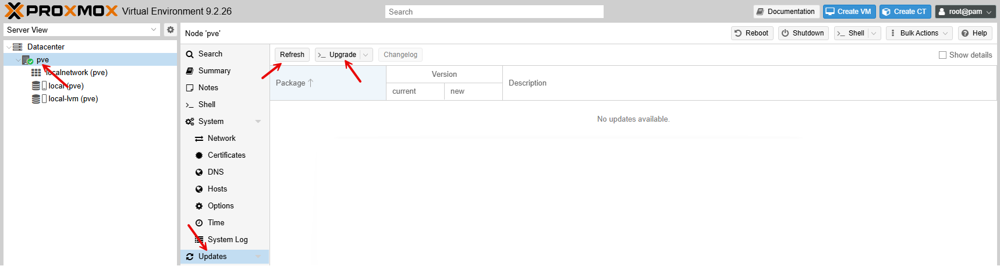
14.4.7 Certificates¶
Proxmox maakt bij de installatie zijn eigen certificaten aan. Je ziet er hier twee:
-
pve-root-ca.pem — de certificaatautoriteit (CA) die Proxmox voor zichzelf heeft opgezet. Die ondertekent de certificaten van alle nodes. Kijk naar de kolom Expires: tien jaar geldig.
-
pve-ssl.pem — het certificaat van deze node zelf, ondertekend door die CA. Dit is wat je browser te zien krijgt wanneer je naar poort 8006 surft. Het is twee jaar geldig en wordt automatisch vernieuwd.
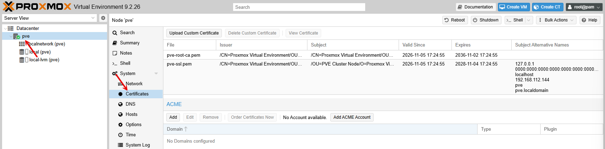
In de kolom Subject Alternative Names staat waarvoor dat tweede certificaat geldig is: 127.0.0.1, localhost, pve, pve.localdomain en het IP-adres 192.168.112.144. Surf je naar een naam of adres dat daar niet bij staat, dan klaagt je browser ook over de naam en niet enkel over de uitgever.
En daar zit meteen de reden van de waarschuwing die je bij het aanmelden kreeg. Het certificaat op zich is in orde, maar je browser kent de CA die het ondertekend heeft niet: die bestaat alleen op jouw server. Voeg je pve-root-ca.pem toe aan de vertrouwde root-certificaten van je besturingssysteem, dan verdwijnt de waarschuwing — en meteen ook voor elke andere node die diezelfde CA later ondertekent.
In Powershell voer je onderstaande uit:
PS C:\WINDOWS\system32> scp root@192.168.112.144:/etc/pve/pve-root-ca.pem .
PS C:\WINDOWS\system32> Import-Certificate -FilePath "C:\Users\stijn\pve-root-ca.pem" -CertStoreLocation Cert:\LocalMachine\Root
Eronder staat ACME, het protocol waarmee je automatisch een certificaat aanvraagt bij een publieke certificaatautoriteit zoals Let’s Encrypt. Zo’n certificaat vertrouwt elke browser meteen, zonder dat je iets moet installeren. Maar dan moet je server wel een echte domeinnaam hebben die publiek te bereiken is, want de certificaatautoriteit controleert of jij die naam effectief beheert. Met een IP-adres in een labonetwerk lukt dat niet, dus laten we dit ongemoeid. Je ziet dan ook No Account available en No Domains configured staan.
14.4.8 Shell¶
Onder Shell open je een terminal op de node, rechtstreeks in de browser en dus zonder SSH.
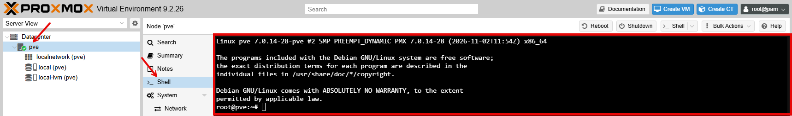
14.4.9 Time, Subscription en Task History¶
Onder System, Time staan de tijdzone en de tijd van de node.
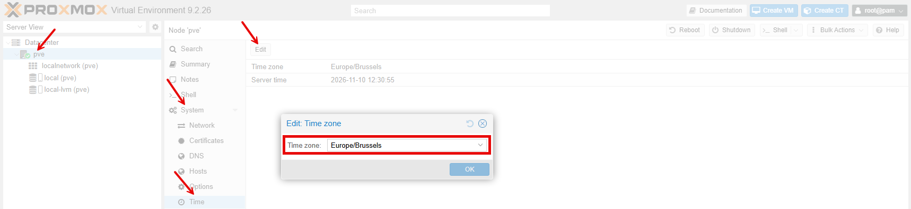
Met Edit pas je de tijdzone aan.
Subscription toont de status van je abonnement. Bij ons staat daar notfound: There is no subscription key omdat we werken met de gratis no-subscription-repository. Dat is ook de reden voor het venster No valid subscription dat je bij elke aanmelding kreeg; het post-install-script zet dat venster uit.
Als je wel een abonnement koopt geef je bij de bestelling het Server ID op dat je hier ziet staan.
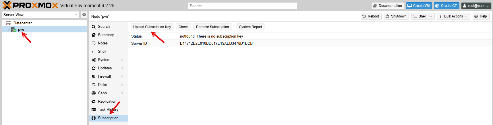
Onderaan het venster loopt het takenlogboek. Via Task History raadpleeg je ook oudere taken; met View/Output en View/Status zie je wat een taak precies gedaan heeft.
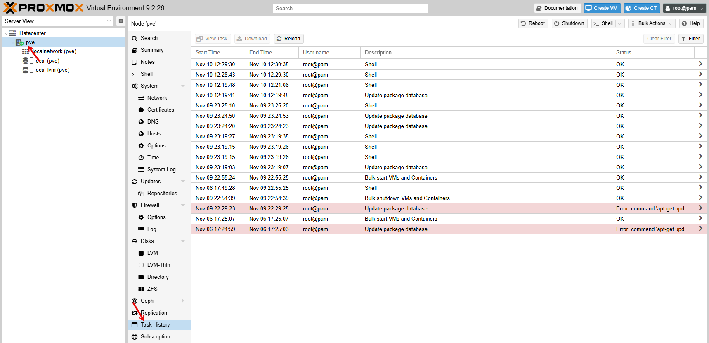
14.5 Overzicht van het datacenterbeheer¶
Wanneer je in de webinterface links bovenaan op Datacenter klikt, beheer je niet één specifieke server, maar het centrale niveau van je hele Proxmox VE-omgeving.
Sommige onderdelen komen pas in een cluster tot hun recht. Op je eigen server kan je nu al aan de slag met:
-
Storage: opslag bekijken en externe opslag toevoegen;
-
Backup: back-upopdrachten inplannen;
-
Permissions: gebruikers, rollen en tweefactorauthenticatie;
-
Firewall: regels voor het hele datacenter;
-
Notifications: instellen waar meldingen naartoe gaan.
Cluster, Replication, High Availability en Ceph hebben een cluster nodig; op een losse server gebruik je ze niet.
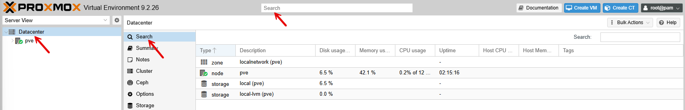
14.5.1 Summary¶
Summary geeft de toestand van het geheel in één oogopslag:
-
hoeveel nodes er online (in dit geval uiteraard één) of offline zijn;
-
hoeveel virtuele machines draaien (in dit geval uiteraard geen) en hoeveel er stilliggen;
-
hetzelfde voor de LXC-containers (in dit geval uiteraard geen);
-
het processorgebruik van alle nodes samen;
-
het gebruik van geheugen en opslag over alle nodes.
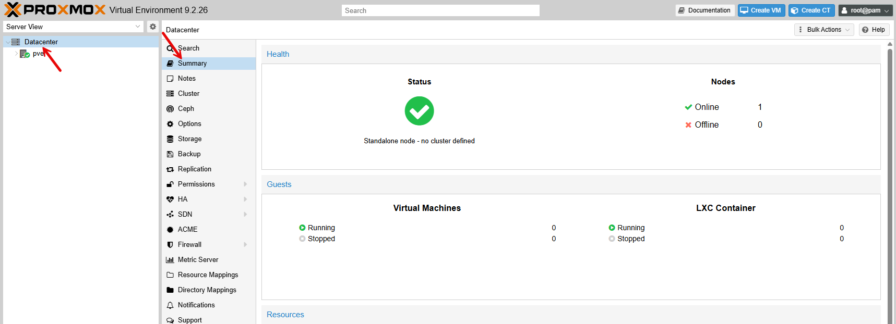
14.5.2 Storage¶
Onder Storage staat de opslag die aan het datacenter gekoppeld is. Elke opslag krijgt een naam en wordt op één of meer nodes beschikbaar gesteld.
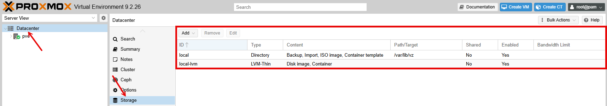
-
Local: de lokale opslag van de node, onder /var/lib/vz. Daar komen je ISO-bestanden, containertemplates en back-ups terecht.
-
local-lvm: de opslag voor de schijven van je virtuele machines en containers. Het is een LVM-thin pool: een schijf van 32 GB neemt pas ruimte in naarmate ze echt gevuld raakt, terwijl gewone LVM die 32 GB meteen vastlegt.
Met Add voeg je externe opslag toe: NFS, SMB/CIFS, iSCSI, CephFS en nog een reeks andere. In een cluster is dat de manier om opslag te delen tussen nodes, en dat heb je nodig voor live migratie en high availability.
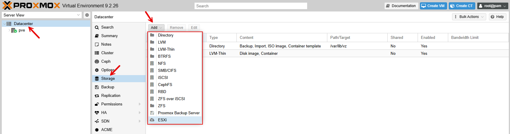
14.5.3 Backup¶
Backup maakt geautomatiseerde back-upschema's aan voor geselecteerde VM's of containers. Je bepaalt hier naar welke opslag de back-up gaat, op welke tijdstippen dit gebeurt (bijv. dagelijks om 02:00) en hoeveel retentie-exemplaren bewaard moeten blijven.
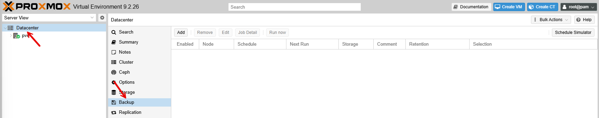
Probeer het zelf. Je hebt nog geen virtuele machines, maar de opdracht kan je al aanmaken:
-
klik op Add. Kies bij Node de server pve en bij Storage de opslag local;
-
bij Schedule geef je op wanneer de back-up loopt, bijvoorbeeld elke dag om 21:00;
-
bij Selection mode kies je All, zodat elke machine die je later aanmaakt vanzelf mee in de back-up zit;
-
bij Mode kies je Snapshot: de machine blijft draaien terwijl de back-up loopt. Stop zet ze even af, Suspend pauzeert ze;
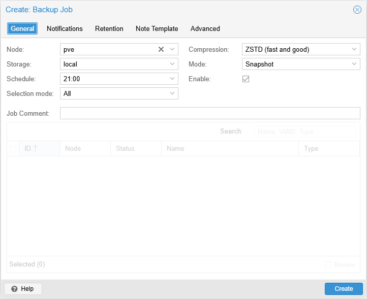
-
onder Retention leg je vast hoeveel back-ups je bijhoudt, bijvoorbeeld de laatste zeven.
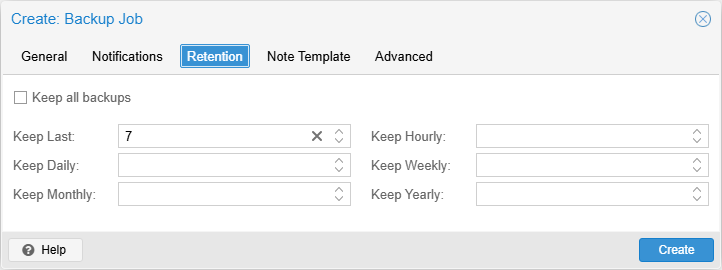
De opdracht verschijnt in de lijst en loopt vanaf dan vanzelf. Zodra er een virtuele machine is, kan je ze met Run now meteen eens uitproberen.
14.5.4 Permissions¶
Onder Permissions regel je wie wat mag:
-
Users en Groups: de gebruikers en de groepen waarin je ze bundelt;
-
Roles: wat iemand mag doen, bijvoorbeeld enkel virtuele machines beheren en niets aan de opslag veranderen;
-
Pools: VM's en containers groeperen, zodat je rechten in één keer aan zo'n groep toekent;
-
Realms: waar de aanmelding gecontroleerd wordt. Linux PAM gebruikt de accounts van de server zelf; je kan ook een Active Directory- of LDAP-server koppelen;
-
API Tokens: een sleutel waarmee een script of een extern systeem de Proxmox-API aanspreekt, zonder wachtwoord;
-
Two Factor: tweefactorauthenticatie.
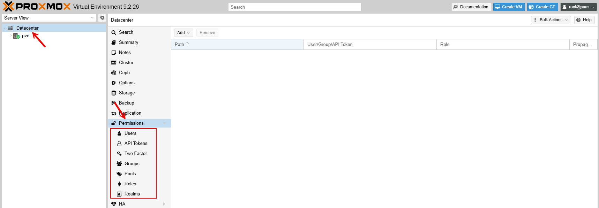
Tweefactorauthenticatie werken we nu uit.
Maak een gebruiker die enkel virtuele machines mag bedienen, maar niets aan de server mag veranderen:
- ga naar Users en klik op Add. Kies als realm Proxmox VE authentication server, geef als naam student en een wachtwoord. Zo'n gebruiker bestaat enkel binnen Proxmox en niet in Linux;
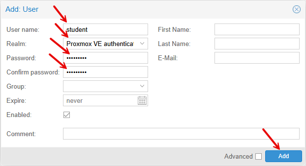
- ga naar Permissions, klik op Add en dan op User Permission.
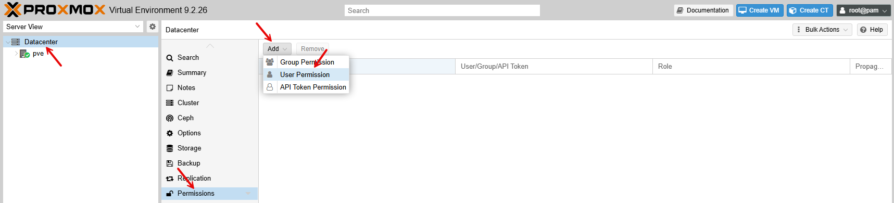
- Kies als pad /vms, als gebruiker student@pve en als rol PVEVMUser;
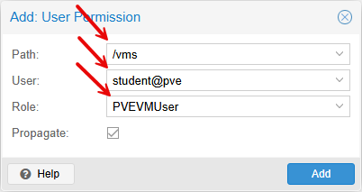
- meld je af en opnieuw aan als student@pve.
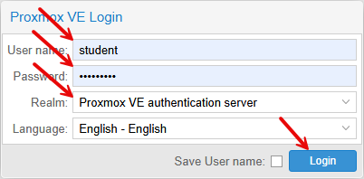
- bekijk wat student nu nog te zien krijgt.
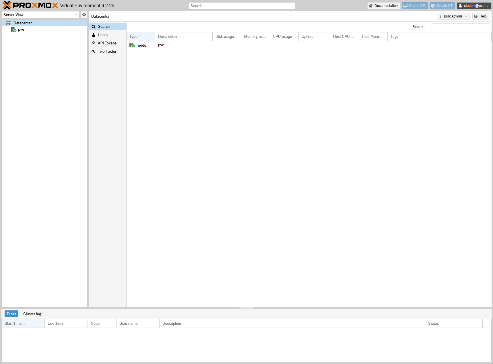
Student ziet bijna niets:
-
in de boom staan enkel het datacenter en de node pve. De opslag local en local-lvm eronder is verdwenen;
-
onder Datacenter blijven enkel Search, Users, API Tokens en Two Factor over. Daar beheert student alleen zijn eigen account: zijn wachtwoord, zijn eigen tokens en zijn eigen tweefactorauthenticatie;
-
Create VM en Create CT bovenaan zijn grijs. De rol PVEVMUser mag bestaande virtuele machines bedienen: starten, stoppen, de console openen, een cd-rom wisselen en een back-up nemen. Een nieuwe machine aanmaken mag ze niet; daarvoor heb je de rol PVEVMAdmin nodig.
Virtuele machines zijn er nog niet. Meld je, zodra er een VM is, nog eens aan als student@pve: de machine staat er dan wel, en je kan ze starten en stoppen, maar niet aan haar instellingen komen.
Een rol zegt wat iemand mag, een pad zegt waarop, en samen vormen ze een permissie.
14.5.5 Tweefactorauthenticatie¶
We werken Two Factor even uit. Met tweefactorauthenticatie (2FA) beveilig je de toegang tot de webinterface: naast je wachtwoord heb je dan een extra code nodig. Je vindt het onder Datacenter, Permissions en dan Two Factor.
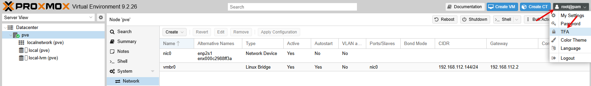
Proxmox ondersteunt onder meer TOTP, WebAuthn en herstelsleutels. Klik op Add om er een toe te voegen.
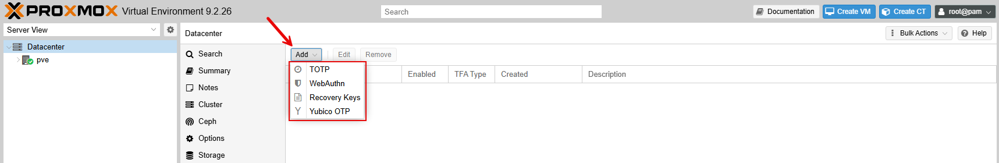
We kiezen hier voor TOTP (Time-based One-Time Password): de app genereert dan een code die maar korte tijd geldig blijft. Je kan daarvoor bijvoorbeeld Google Authenticator gebruiken. Zodra je de QR-code scant, staat de account in de app.
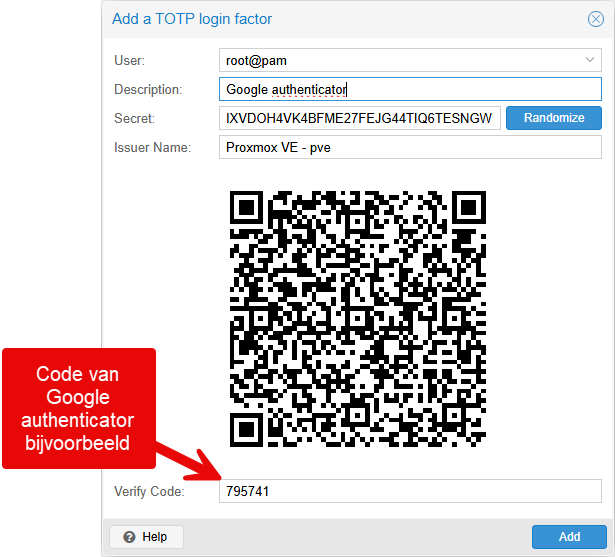
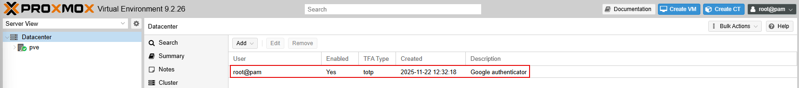
Meld je daarna opnieuw aan, dan vraagt Proxmox na je wachtwoord om de code die op dat moment in je app staat.
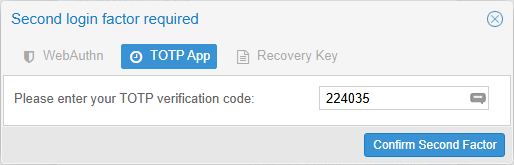
Wil je dat weer uitschakelen, dan verwijder je de tweefactorauthenticatie en meld je je opnieuw gewoon met je wachtwoord aan.
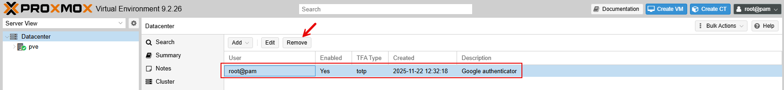
Je kan ook herstelsleutels downloaden via Recovery keys. Elke sleutel werkt maar één keer. Heb je ze allemaal opgebruikt, dan raak je nog altijd binnen zolang je je 2FA-app hebt; nieuwe sleutels krijg je pas als je de tweefactorauthenticatie opnieuw instelt.
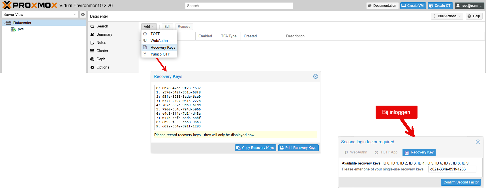
14.5.6 Software Defined Networking¶
Software Defined Networking (SDN) laat je netwerken voor virtuele machines centraal op datacenterniveau beschrijven, in plaats van op elke node apart een bridge aan te maken.
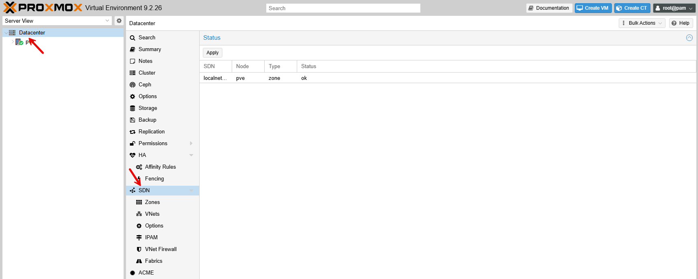
In onze opstelling met één node en één bridge hebben we dit niet nodig.
14.5.7 Firewall¶
Onder Firewall vind je dezelfde instellingen terug, maar dan voor het hele datacenter.
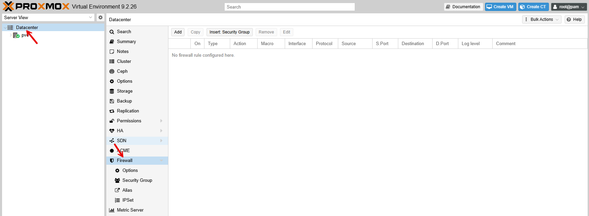
14.5.8 Nog meer op datacenterniveau¶
Verder vind je in dit menu nog:
-
Metrics Server: stuurt meetgegevens door naar een extern systeem zoals InfluxDB of Graphite, voor grafieken en dashboards;
-
Resource Mappings: PCI- en USB-apparaten van een node beschikbaar maken aan een virtuele machine;
-
Directory Mappings: mappen van de host beschikbaar stellen aan virtuele machines en containers;
-
Notifications: waar Proxmox meldingen naartoe stuurt, bijvoorbeeld over een mislukte back-up;
-
Support: enkel bruikbaar met een geldig abonnement.